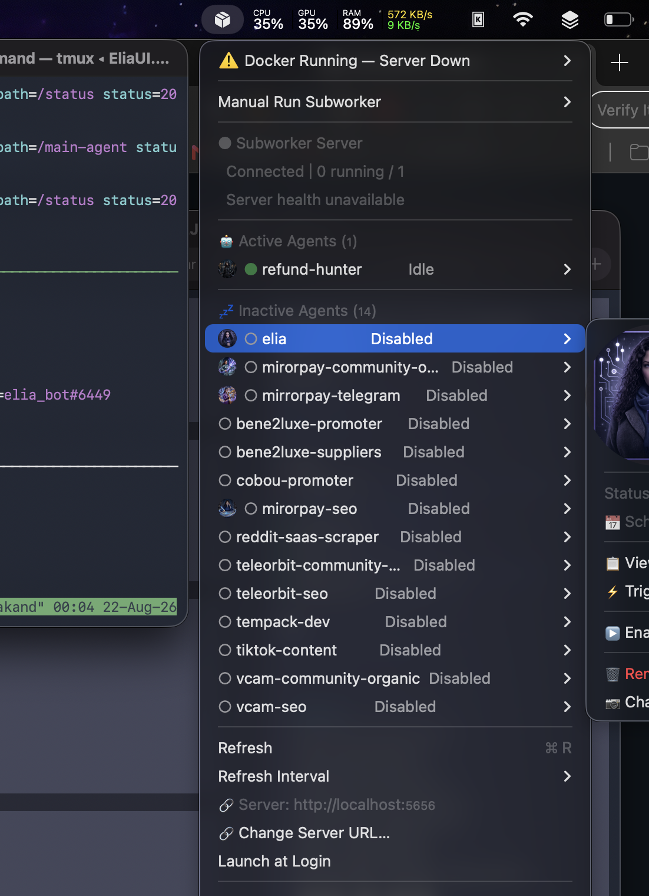

Native macOS menu bar command center for the Elia agent ecosystem. Live subworker status, real-time logs, one-click triggers — plus full Colima instance control.
The full dashboard menu and per-agent controls, live from your menu bar.

Everything you need to monitor, trigger, and manage your Elia subworkers — without leaving the menu bar.
Running, idle, disabled, error, done — pushed from EliaAgent in real time via ws://localhost:5656/ws. Never polled, always fresh.
Each running subworker gets its own top-bar dot with a monogram, ring-colored by state.
When an agent starts, its photo drops from the menu bar icon with a live chat bubble streaming output — visible over fullscreen video, auto-retracts, configurable duration.
Sessions, messages, reasoning, tool calls, live stream — click any agent photo to open the session browser, always clamped inside the screen.
Manual Run dropdown, enable/disable, next run, schedule — everything from the menu, no terminal needed.
Agent photos side, live padding slider, run animation duration + test trigger — zero permissions required.
Connection state, PID, restart count, running/total agents — at a glance, with one-click reconnect.
Start, stop, restart instances. Open a shell, inspect resources, delete, auto-refresh — plus launch at login. Full Docker container control from your menu bar.
EliaTopBar is the control surface. EliaAgent is the engine. The app renders, the server decides.
Grab EliaTopBar-vX.Y.Z-arm64.dmg from the latest release, open it and drag EliaTopBar to Applications.
Ad-hoc signed, not notarized: right-click the app → Open, then confirm. Stubborn?xattr -dr com.apple.quarantine
| Requirement | Detail |
|---|---|
| macOS | 13.0+ (Ventura or newer), Apple Silicon |
| Swift toolchain | 5.9+ (only for building from source) |
| EliaAgent | FastAPI server, default localhost:5656 (optional — for subworker features) |
| Colima | brew install colima (optional — only for container management) |
xattr -dr com.apple.quarantine /Applications/EliaTopBar.app